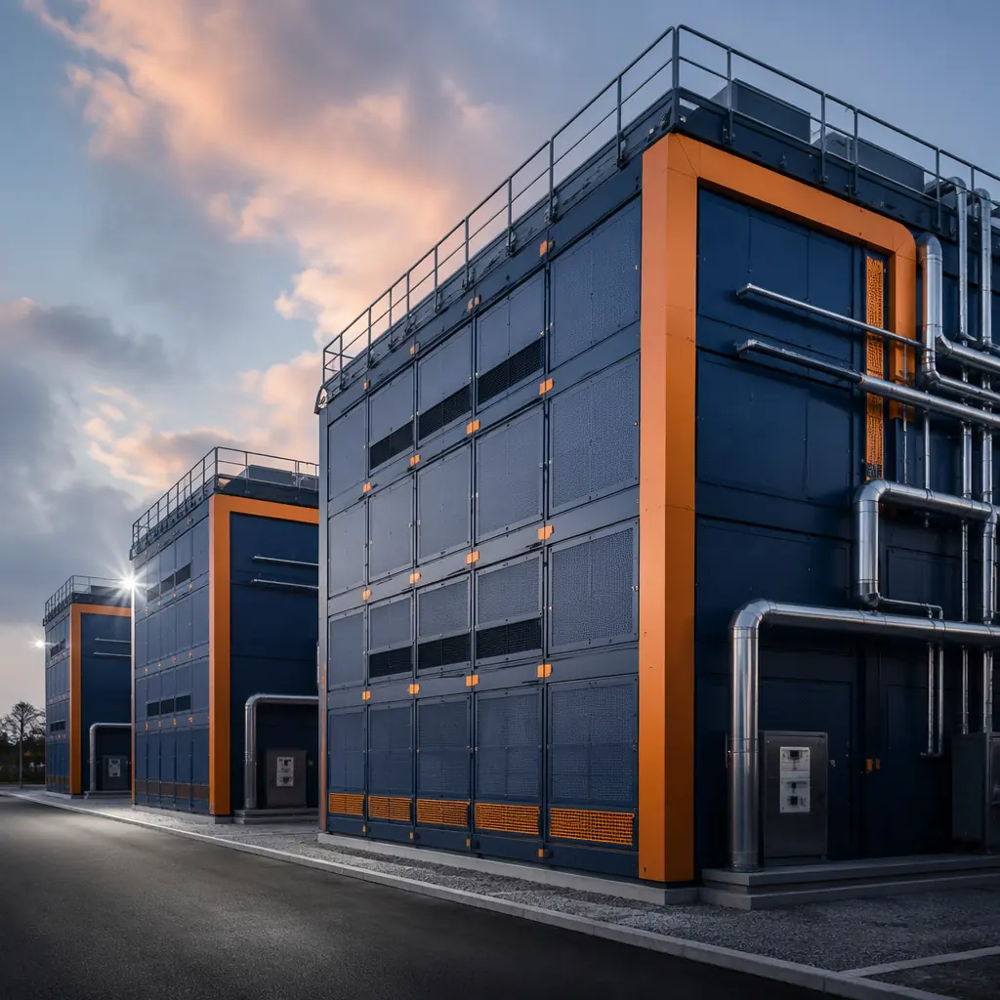
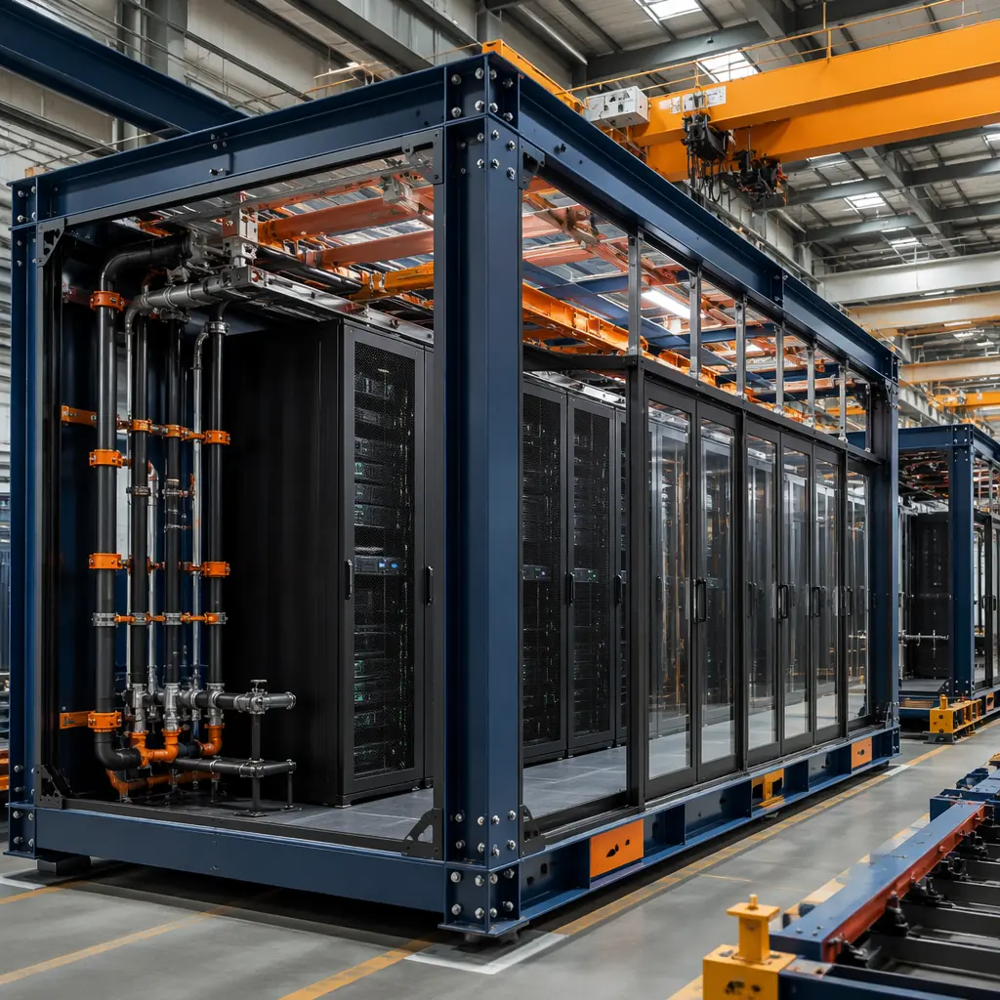
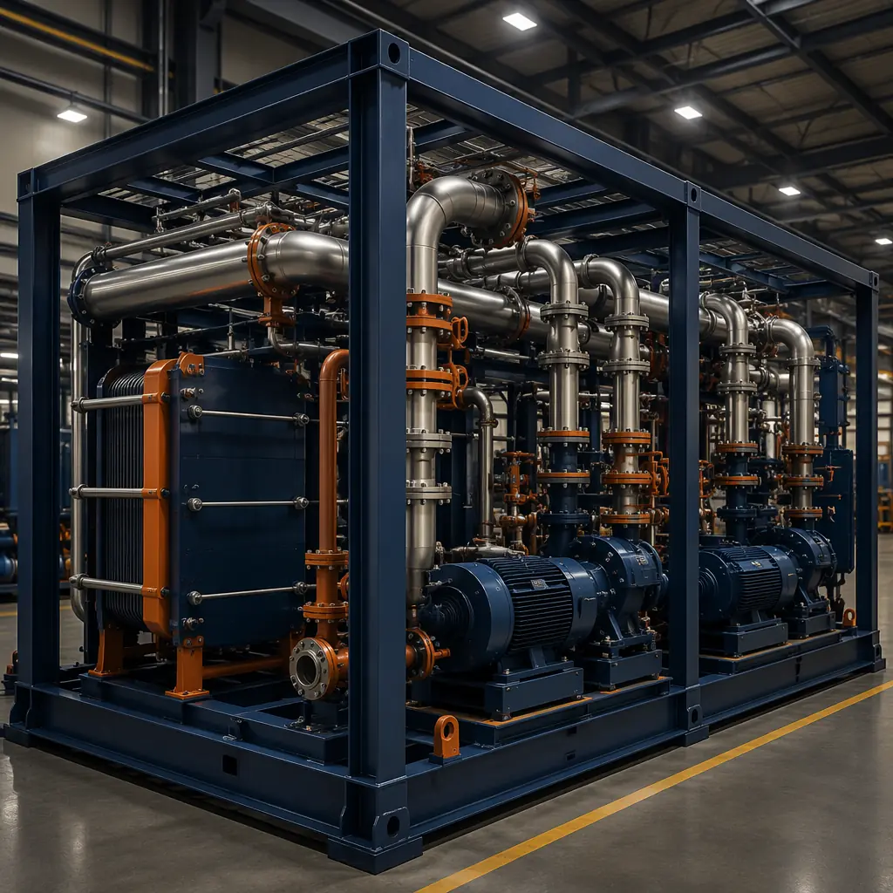

The AI infrastructure build-out is the largest capital deployment in data center history. McKinsey estimates $1.8 trillion will flow into AI data center construction globally between 2025 and 2030 — a market growing at 23% CAGR. NVIDIA shipped 3.8 million H100-equivalent GPUs in 2025 alone, and each rack of H100s draws 40-50kW, roughly 5-8x the power density of a traditional enterprise server rack. Traditional data center construction cannot keep pace: a ground-up 50MW AI data center takes 24-30 months from site selection to commissioning using conventional methods. Modular prefabricated construction cuts this to 12-16 months — a 40-50% reduction — while delivering the precision mechanical and electrical infrastructure that GPU clusters demand.

Why AI Compute Breaks Traditional Data Center Construction
AI training and inference workloads impose three requirements that conventional data center design struggles to meet simultaneously:
- Power density of 50-100kW per rack: An NVIDIA GB200 NVL72 rack consumes approximately 120kW — equivalent to 15-20 traditional server racks in a single cabinet footprint. Supporting this density requires busway distribution at 415V/480V, not legacy 208V PDUs, and the switchgear lead time alone for a 50MW AI campus is currently 52-78 weeks. Modular data center construction addresses this by integrating medium-voltage switchgear, transformers, and busway distribution into factory-built power modules that are manufactured in parallel with site preparation — eliminating the 12-18 month electrical equipment queue from the critical path.
- Direct-to-chip liquid cooling: Air cooling hits its practical limit at 25-30kW per rack. Above 40kW, direct-to-chip liquid cooling or immersion cooling becomes mandatory. This requires a facility-wide secondary cooling loop with CDU (coolant distribution units) on every data hall floor, plus rooftop dry coolers or cooling towers sized for 100% of IT load. For a 10MW AI data hall, that's approximately 2,850 tons of heat rejection — 3-4x what a traditional enterprise data hall of the same square footage requires. Modular factory-built data halls pre-integrate CDU racks, piping headers, and leak detection systems before the module leaves the factory, eliminating the 8-10 weeks of on-site MEP coordination that liquid cooling retrofits demand in traditional builds.
- Network fabric density: AI training clusters use 400Gb/s and 800Gb/s InfiniBand or RoCE fabrics with 1:1 non-blocking topologies. A 1,000-GPU cluster requires approximately 2,000 transceivers and 3-5km of fiber patch cables, all of which must be installed, tested, and certified before the first training job runs. In a traditional build, network cabling happens after the data hall is enclosed — week 18-20 in a 24-week schedule. In a modular build, the network fabric is pre-cabled, pre-tested, and pre-certified at the factory, shrinking the on-site network commissioning window from 6 weeks to 2 weeks.
These aren't incremental differences. Uptime Institute's 2025 survey found that 58% of AI data center projects experienced schedule delays exceeding 12 weeks, with the top three causes being: electrical equipment lead times (cited by 72% of operators), liquid cooling integration complexity (64%), and skilled labor shortages for high-density MEP installation (58%). As we've shown in our analysis of modular data center construction, factory-controlled production systematically eliminates all three of these delay vectors. Our BIM-to-factory digital workflow ensures the electrical, mechanical, and network systems are installed to ±2mm precision — the tolerance level that AI infrastructure demands.
Modular AI Data Center Architecture
A modular AI data center isn't a single factory-built box — it's an assembly of purpose-built modules, each optimized for a specific infrastructure function, connected on site to form a complete facility.
Data Hall Modules
The core unit: a 14' × 60' steel-frame module (840 sq ft) housing 8-12 racks per module. Each data hall module arrives with: cold-aisle containment structure pre-installed, overhead busway pre-mounted, direct-to-chip liquid cooling CDU rack pre-integrated, primary and secondary piping headers pre-routed and pressure-tested, fiber patch panels pre-terminated, and the raised floor system (24" clear height for under-floor cooling distribution) installed at the factory. Twelve data hall modules connected side-by-side create a 10,000 sq ft GPU cluster floor supporting approximately 120 racks at 50kW average density — 6MW of IT load in a single deployment unit.

Power Infrastructure Modules
AI workloads demand power infrastructure that traditional construction methods simply cannot procure fast enough. Modular power skids — factory-built in 40' ISO container footprints — integrate medium-voltage switchgear, dry-type transformers (415V to 480V step-down), UPS systems with 5-minute flywheel or 10-minute battery backup, and main distribution panels. A single power module supports 2-3MW of IT load; a 50MW AI campus requires 18-20 power modules. Critically, these modules are manufactured in 16-20 weeks in parallel with site civil work, compared to the 52-78 week lead time for site-assembled medium-voltage switchgear. The result: electrical infrastructure is no longer the longest-lead item on an AI data center construction program.
Cooling Plant Modules
For liquid-cooled AI clusters, the cooling plant is often the most spatially intensive subsystem. A 10MW data hall with direct-to-chip cooling requires approximately 1,400 GPM of treated process water circulating through CDUs, dry coolers, and storage tanks. Modular cooling plants — built as interconnected skid-mounted modules housing pumps, plate-and-frame heat exchangers, filtration systems, chemical treatment dosing units, and controls — reduce on-site cooling plant construction from 14-16 weeks to 4-6 weeks of module interconnection. As we documented in our guide to modular MEP systems integration, pre-integrated mechanical modules achieve 95%+ first-pass commissioning rates compared to 60-70% for field-assembled systems.
Speed-to-Market: The Economic Case for Modular AI Infrastructure
The business case for modular AI data center construction isn't about saving construction cost per square foot — it's about time-to-revenue. An AI data center generating $50 million in annual colocation revenue loses approximately $4.2 million for every month of delayed commissioning. When the alternative is a 30-month traditional build versus a 14-month modular build, the 16-month acceleration represents $67 million in recovered revenue potential — far exceeding any marginal construction cost difference.
| Project Phase | Traditional Build (50MW) | Modular Build (50MW) |
|---|---|---|
| Site selection & permitting | 4-6 months | 4-6 months (identical) |
| Civil & foundation work | 5-7 months | 4-5 months (reduced scope) |
| Building enclosure | 6-8 months | Concurrent with factory production |
| MEP rough-in & electrical | 8-10 months (after enclosure) | Pre-integrated in factory modules |
| Commissioning & acceptance | 3-4 months | 1-2 months (pre-tested at factory) |
| Total: Site selection to live load | 26-35 months | 12-16 months |
For colocation providers executing multi-site AI infrastructure rollouts, the program-level acceleration compounds. As we've analyzed in our comparison of modular data center TCO: build vs buy, modular construction's schedule certainty is worth 8-12% in effective IRR improvement for multi-facility programs. Developers scaling from one facility to five can reliably forecast commissioning dates 12 months out — something traditional construction's 58% delay rate makes impossible. MODURA's modular foundation systems further compress site preparation timelines, particularly on the greenfield sites that AI data center developers increasingly target for lower energy costs.

Designing for GPU Density: Structural and Thermal Considerations
AI data centers impose floor loading requirements that exceed traditional data center designs. An NVIDIA DGX GB200 rack with liquid cooling infrastructure weighs approximately 2,500 kg (5,500 lbs) — roughly 3x a standard enterprise server rack. Across a 120-rack data hall, that's 300 metric tons of concentrated IT load, requiring floor slab designs of 150-200 psf (compared to 100-125 psf for enterprise data halls). Modular construction's steel frame inherently handles these loads: MODURA's standard data hall module is engineered for 250 psf live load, with structural capacity pre-verified in the factory rather than relying on field-poured concrete slab inspections.
The acoustic environment also demands attention. AI GPU clusters operating at full TDP produce 85-90 dBA of fan noise — comparable to a manufacturing floor. While operators rarely occupy the data hall during production runs, adjacent office and NOC spaces require STC 55+ separation. Factory-built modules achieve this through pre-installed acoustic insulation in wall and ceiling cavities, tested at the factory before module shipment. For developers evaluating noise-sensitive AI deployments adjacent to residential or commercial zones, our guide to modular building acoustics and soundproofing details STC ratings achievable with different wall assembly configurations.
Scalability: From Edge Inference to Hyperscale Training
Modular AI data center construction scales across the full spectrum of AI infrastructure:
- Edge inference nodes (100-500kW, 4-8 racks): 1-2 data hall modules deployed at telecom aggregation points or enterprise campuses. Pre-integrated with 20kW/rack cooling and local UPS. Deployment time: 8-10 weeks from order to live load. Use case: low-latency inference for autonomous systems, real-time video analytics, and on-premises LLM serving.
- Regional training clusters (2-10MW, 40-200 racks): 4-12 data hall modules with dedicated power and cooling modules. Deployment time: 6-9 months. Use case: enterprise fine-tuning clusters, regional cloud AI zones, pharmaceutical molecular dynamics simulation.
- Hyperscale training campuses (50-200MW, 1,000-4,000 racks): 18-70 data hall modules, 6-25 power modules, site-built central cooling plant. Deployment time: 12-16 months for first 50MW phase. Use case: foundation model training, national AI research infrastructure, sovereign AI cloud deployments.
This modular scalability is what makes prefabricated construction the default choice for AI infrastructure programs. A developer can commission a 500kW edge node in Q1, add 5MW of training capacity in Q3, and scale to 50MW by Q4 of the following year — all using the same factory-built module platform, the same supply chain, and the same installation methodology. Compare this to the traditional approach: three entirely separate design-bid-build projects, three separate GC teams, and zero cross-project learning. For developers executing geographic expansion strategies — deploying AI infrastructure across multiple countries simultaneously — our cross-border modular logistics guide covers customs, compliance, and multi-country module shipping.
Getting Started: Feasibility Assessment for AI Infrastructure
MODURA's approach to AI data center construction begins with a 3-week feasibility assessment covering: power availability analysis at candidate sites (transmission-level grid interconnection, not just distribution-level), cooling water source evaluation (municipal, well, or closed-loop options), module configuration for target GPU density (H100, H200, B200, or GB200 clusters), and a phased deployment schedule with milestone dates. The assessment includes a preliminary total cost of ownership model comparing modular to traditional construction, with sensitivity analysis for power cost escalation (+15% to +40% scenarios based on regional grid forecasts) and GPU technology refresh cycles (24-month vs 36-month).
AI infrastructure decisions are made in weeks, not months. Modular construction is the only delivery method that matches that decision velocity.